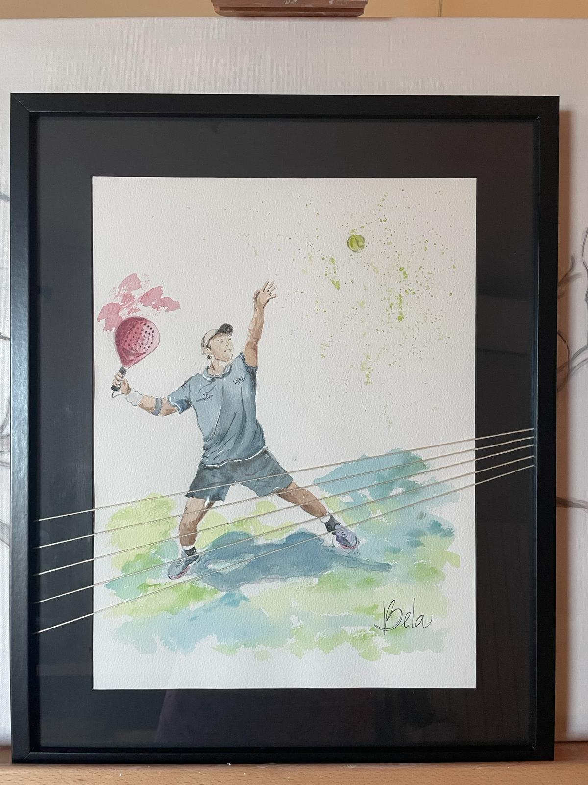
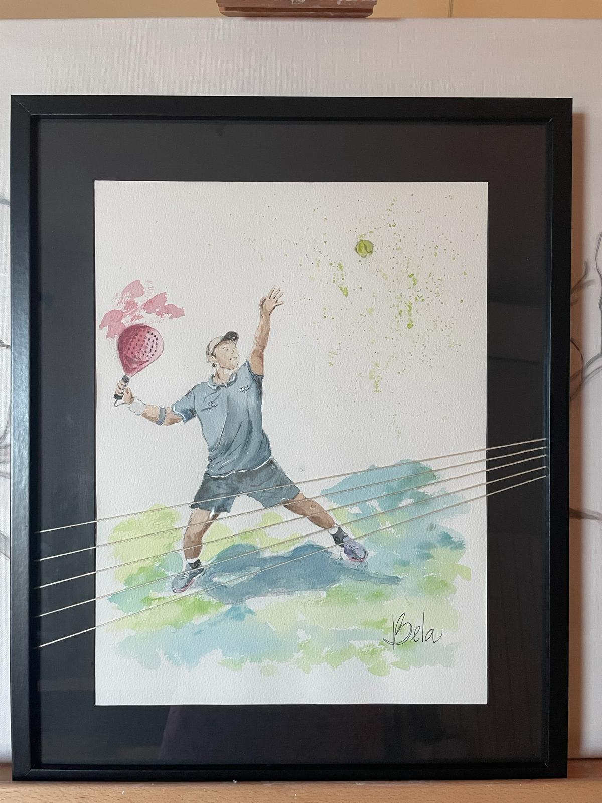

Encargos Realizados
¿Tienes una imagen especial que te gustaría convertir en arte?
Te presento algunos encargos realizados: obras únicas creadas a partir de fotografías personales, momentos inolvidables o paisajes significativos. Cada encargo es una colaboración en la que transformo tu ilusión en una pieza original y llena de alma.
Ya sea un lugar, una mascota, un momento especial… cualquier recuerdo que quieras inmortalizar, estaré encantada de trabajar contigo para darle forma.

Mascotas
Aficiones. Sevillanas

Un rincón especial
 

Aficiones. Deportes

Momentos para recordar